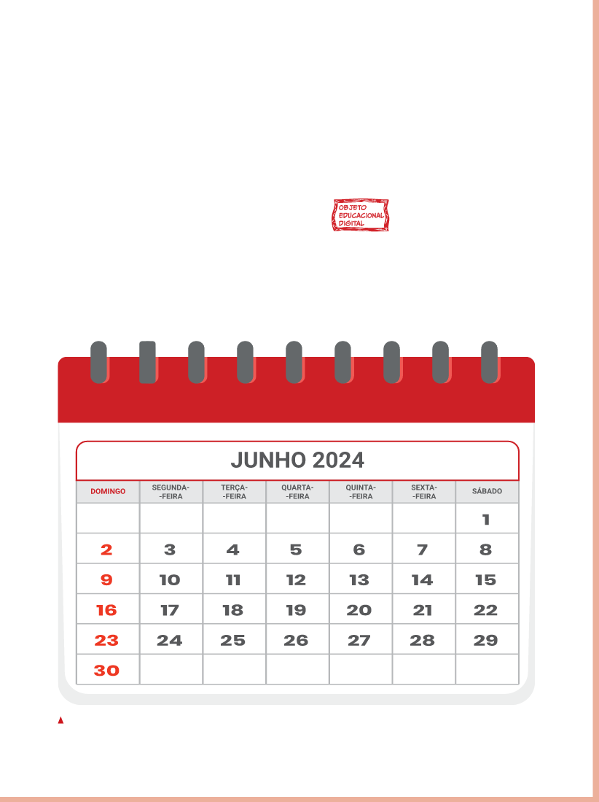

ORGANIZANDO O TEMPO
ATÉ O MOMENTO, EXPLORAMOS MANEIRAS DE ORGANIZAR INFORMAÇÕES.
AGORA, VAMOS PENSAR SOBRE A ORGANIZAÇÃO DO TEMPO.
UMA SEMANA É UM PERÍODO DE SETE DIAS SEGUIDOS.

OBJETO EDUCACIONAL DIGITAL
Valéria Rezende
DE ACORDO COM ESSE MODELO DE CALENDÁRIO, PODEMOS OBSERVAR COMO ESTÃO DISPOSTOS OS DIAS DA SEMANA.
JUNHO 2024
DOMINGO
SEGUNDA- -FEIRA
TERÇA- -FEIRA
QUARTA- -FEIRA
QUINTA- -FEIRA
SEXTA- -FEIRA
SÁBADO
1
2
3
4
5
6
7
8
9
10
11
12
13
14
15
16
17
18
19
20
21
22
23
24
25
26
27
28
29
30
OBJETO EDUCACIONAL DIGITAL
Vídeo - Calendários do mundo: conhecendo culturas
Objeto Educacional Digital em formato de vídeo, no qual são explorados diferentes tipos de calendário e os povos que os utilizam.
Apresenta três tipos de calendário: solar, lunar e lunissolar, enfatizando o marco inicial utilizado para a contagem de tempo de cada um deles, de acordo com a diversidade cultural da sociedade em que é utilizado.
Ao estudar os calendários, os estudantes podem perceber as diferenças culturais e a continuidade histórica que representam os povos que os utilizam.